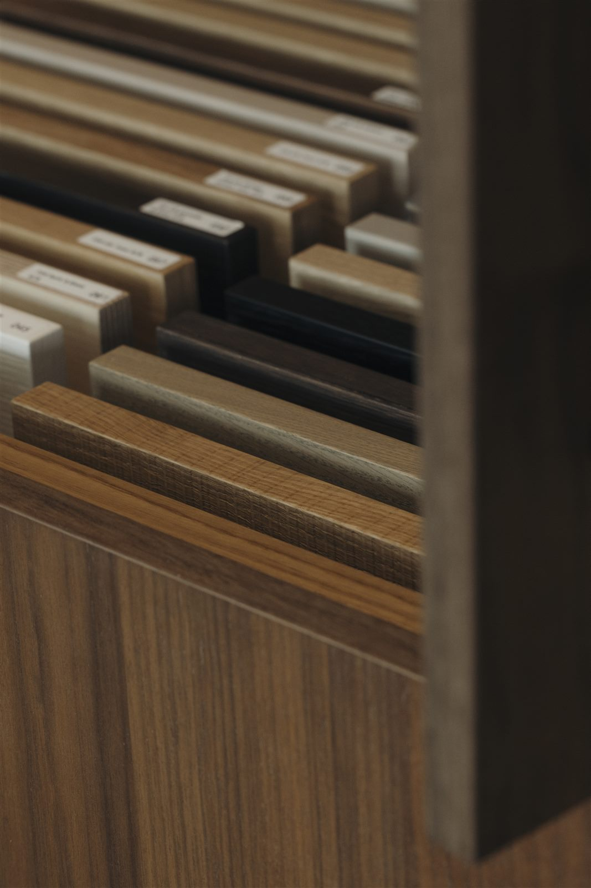
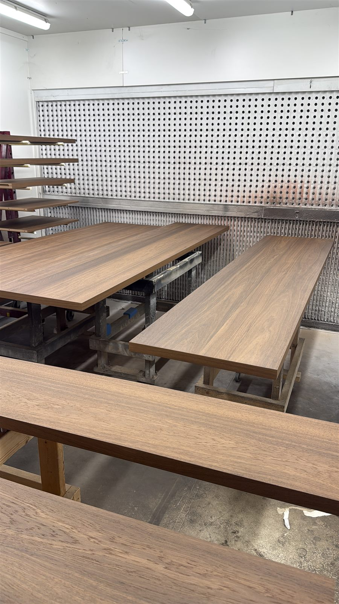
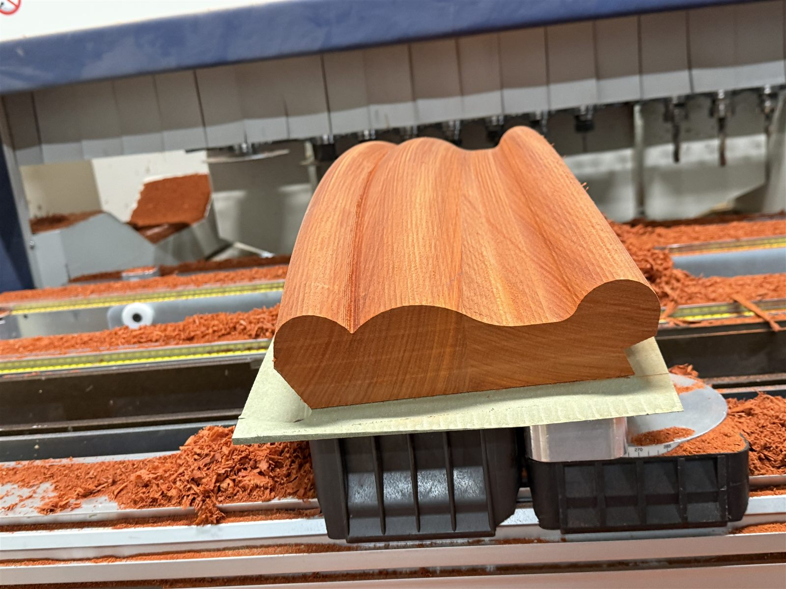
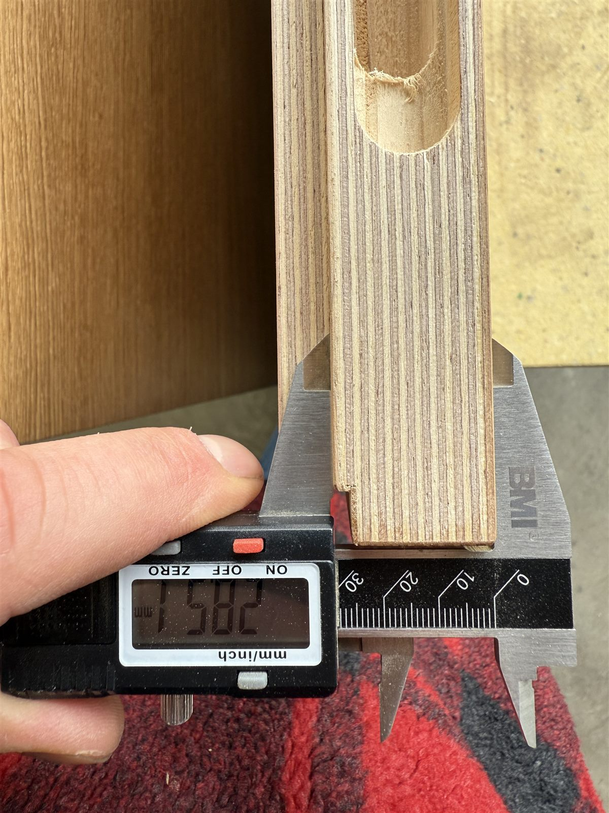

Plaatmateriaal op maat
Gezaagd of gefreesd uit de volle plaat volgens uw lijst: rechthoekige stukken, vormen, uitsparingen en boringen voor beslag.
Voor interieurbouwers, architecten en schrijnwerkers
U ontwerpt en verkoopt, wij maken. Dat kan een pakket onderdelen zijn dat u zelf monteert, of een volledig afgewerkt meubel. U kiest hoe ver wij gaan.

Gezaagd of gefreesd uit de volle plaat volgens uw lijst: rechthoekige stukken, vormen, uitsparingen en boringen voor beslag.

Bogen, profielen en driedimensionale vormen in massief hout, gefreesd op de CNC-machine.

Naast melamine en laminaat verwerken wij massief hout en gefineerde platen.

Wilt u een afgewerkt geheel? Wij monteren en werken af in het atelier.

Een onderdeel dat u zelf niet kunt maken of waarvoor uw machines niet geschikt zijn: vraag het ons.

Wij maken alles op maat, tot op de millimeter, en meten na wat de deur uitgaat.
Een tekening, een stuklijst of een schets met maten.
Met materiaal, bewerkingen en een datum. Onduidelijkheden bespreken we vooraf, niet achteraf.
Elk onderdeel krijgt een etiket met uw referentie, zodat u bij de montage niet moet zoeken.
Uw bestelling staat klaar in Herenthout. Wij verwittigen u zodra u ze kunt ophalen.
Vaste klanten volgen in ons portaal de stand van hun projecten. Later kunt u er ook zaaglijsten bestellen.
Stuur uw tekening of lijst door. Wij bekijken wat wij voor u kunnen maken.